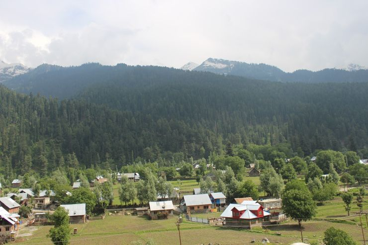

Jammu & Kashmir, a piece of heaven on earth, is the 19th largest state in India and it is located mostly all in the Himalayan mountains. It is also the only state in India with a Muslim-majority population.
J&K consists of three main regions – Jammu, the Kashmir Valley and Ladakh. Between the three, the state offers beautiful verdant mountains and valleys, religious shrines and remote mountains. The people here are warm and hospitable, and they will welcome you into their land and homes easily. Each of these regions has its own culture, and this is evident in their daily lives and also their lifestyle.Whatever your reason for visiting J&K, whether it is to enjoy the beauty, or test your limits while trekking the mountains, or simply to discover serenity and peace, J&K will offer you several reasons to keep coming back for more.
| Jammu & Kashmir: A Quick View of the state | |
| Capital | Srinagar (summer) and Kashmir (winter) |
| Official Language | Urdu |
| Dial Code | 0194 |
| Population | 14.324 (as of 2018) |
| Currency | Indian Rupee (INR) |
| Time Zone | UTC+05:30 (IST) |
| Area | 222,236 square km |